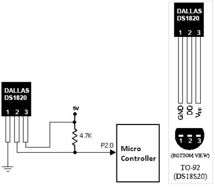

Sensor de temperatura DS1820

TECHNICAL DETAILS
Not for use in salt water or other corrosive environments.
Cable specs:
Stainless steel tube 6mm diameter by 30mm long Cable is 36" long / 91cm, 4mm diameter
Contains DS18B20 temperature sensor
If your sensor has four wires - Red connects to 3-5V, Black connects to ground and White is data. The copper wire is soldered to the wire shielding
If your sensor has three wires - Red connects to 3-5V, Blue/Black connects to ground and Yellow/White is data
DS18B20 Technical specs:
Usable temperature range: -55 to 125°C (-67°F to +257°F)
9 to 12 bit selectable resolution
Uses 1-Wire interface- requires only one digital pin for communication
Unique 64 bit ID burned into chip
Multiple sensors can share one pin
±0.5°C Accuracy from -10°C to +85°C
Temperature-limit alarm system
Query time is less than 750ms
Usable with 3.0V to 5.5V power/data
Documentación
//#device PIC16F84A
//#device PIC16F628A
//#device PIC16F818
//#device PIC16F873A
//#device PIC16F883
//#device PIC16F877A
#device PIC16F887
//#device PIC18F2550
//#device PIC18F4455
//#device PIC18F4550
#define DS1820_PIN PIN_A0
#include <Arduino.h.encrypted>
#include <LiquidCrystal.h>
#include <ds18s20.c>
float temp;
char grados = 223;
char txt2stream[10];
void setup() {
digitalWrite(LCD_BACKLIGHT, HIGH);
lcd_begin(16,2);
delay(200);
lcd_setCursor(0,0);
sprintf(txt2stream,"Temp:");
lcd_print(txt2stream);
Serial_begin(9600);
}
void loop() {
temp = read_full_temp();
lcd_setCursor(6,0);
sprintf(txt2stream,"%.1f%cC",temp,grados);
lcd_print(txt2stream);
sprintf(txt2stream,"$%.1f",temp);
Serial_println(txt2stream);
delay(1000);
}
Código Sharp Develop
/*
* Created by SharpDevelop.
* User: AnDrEs
* Date: 25/04/2016
* Time: 19:25
*
* To change this template use Tools | Options | Coding | Edit Standard Headers.
*/
using System;
using System.Collections.Generic;
using System.Drawing;
using System.Windows.Forms;
using System.IO.Ports;
namespace PIC_a_C_
{
/// <summary>
/// Description of MainForm.
/// </summary>
public partial class MainForm : Form
{
public MainForm()
{
//
// The InitializeComponent() call is required for Windows Forms designer support.
//
InitializeComponent();
//
// TODO: Add constructor code after the InitializeComponent() call.
//
}
void Button_BuscarClick(object sender, EventArgs e)
{
comboBox_Puertos.Items.Clear();
foreach (string s in SerialPort.GetPortNames())
comboBox_Puertos.Items.Add(s);
if (SerialPort.GetPortNames().GetLength(0)>0)
comboBox_Puertos.Enabled = true;
serialPort1.Close();
}
void ComboBox_PuertosSelectedIndexChanged(object sender, EventArgs e)
{
if (comboBox_Puertos.Text != "")
button_Conectar.Enabled = true;
}
void Button_ConectarClick(object sender, EventArgs e)
{
if (comboBox_Puertos.Text != "")
{
CheckForIllegalCrossThreadCalls = false;
serialPort1.PortName = comboBox_Puertos.Text;
comboBox_Puertos.Enabled = false;
serialPort1.Open();
button_Conectar.Enabled = false;
}
}
void SerialPort1DataReceived(object sender, System.IO.Ports.SerialDataReceivedEventArgs e)
{
int cant_datos = 1;
string datos;
string[] vector_datos;
double sensor;
if (serialPort1.BytesToRead > 1)
{
datos = serialPort1.ReadLine();
if (datos.StartsWith("$"))
{
vector_datos = datos.Substring(1).Split('/');
if (vector_datos.Length==cant_datos)
{
sensor = Convert.ToDouble(vector_datos[0])/10;
label2.Text = sensor.ToString()+"°C";
basicChart1.MaxPoints = 1000;
basicChart1.YMaximum = 100;
basicChart1.Points.Add(Convert.ToInt16(sensor));
}
}
}
}
void MainFormLoad(object sender, EventArgs e)
{
System.Threading.Thread.CurrentThread.CurrentCulture = new System.Globalization.CultureInfo("en-US");
}
void MainFormFormClosed(object sender, FormClosedEventArgs e)
{
serialPort1.Close();
}
}
}